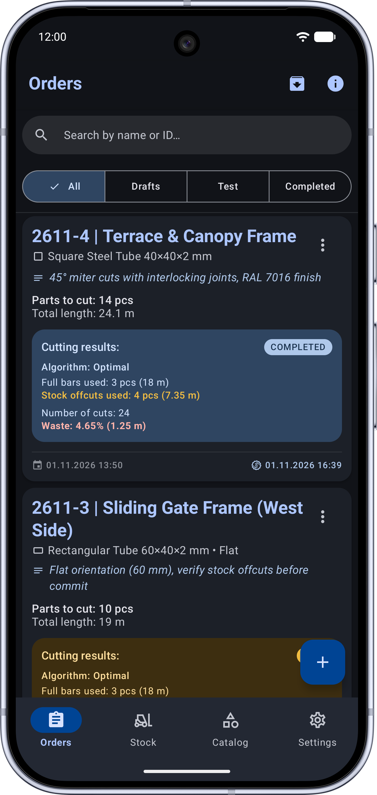
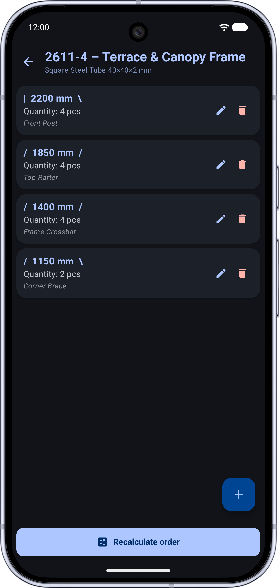
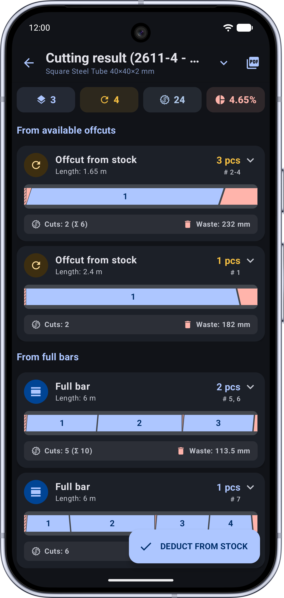
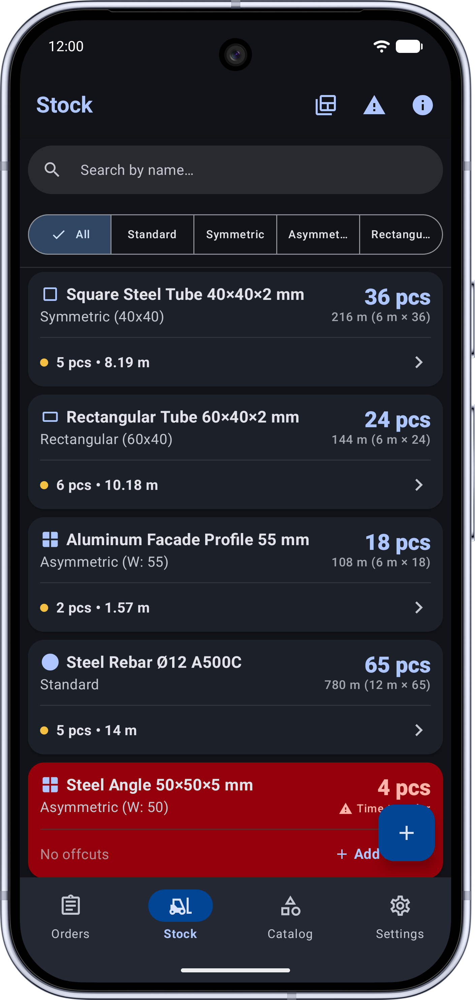

Minimize scrap waste —
maximize material yield.
Cutting aluminum or PVC profiles, round and square tubing, timber, rebar, or conduit? Enter required part lengths, set saw blade cut thickness (kerf), and let the algorithm generate the most efficient 1D cutting layout in seconds.

Screenshot placeholder:assets/linear-cutting/screen-main-en.png
Why Guesswork Cutting Leads to Costly Losses
The costs of steel, PVC extrusions, and timber keep rising. Every offcut piece under 1 meter represents frozen cash or scrap disposal fees.
- • Ignored saw kerf: forgetting 3–4 mm blade cut width turns the final workpiece on a stock bar into unusable scrap.
- • Piles of dead offcuts: the shop floor is cluttered with 60–80 cm remnants while new full-length stock continues to be cut.
- • Slow manual math: machine operators spend 20 minutes with paper and pen guessing part combinations instead of cutting.
- • 1D Bin Packing: mathematical nesting packs parts tightly, keeping leftover scrap to the absolute minimum.
- • Automated kerf compensation: cut width is automatically factored into each division line, eliminating dimensional errors.
- • Remnant-first nesting: offcut pieces in your inventory are utilized first before opening fresh full-length stock bars.
An Engineering Tool Right on the Shop Floor
Precise Saw Kerf Setting
Configure any saw blade or abrasive wheel thickness (e.g., 2.5 mm, 3.2 mm, or 1/8"). Every division line is calculated with millimeter accuracy.
Offcut & Remnant Inventory
Include already existing pieces of varying lengths. The optimizer prioritizes these offcuts first, decluttering your workshop.
Visual Cutting Layout
A clear visual cutting layout for each raw stock bar: cutting sequence, part sizes, and distinct indicators for usable offcuts vs. scrap.
Instant Optimization
Fast optimization algorithms process dozens of parts, stock lengths, and quantities in fractions of a second, even on budget devices.
100% Offline Capability
Operates smoothly inside metal workshops, aircraft hangars, garages, and on job sites without internet access or cellular signal.
Strict Data Privacy
No mandatory accounts, sign-ups, or remote tracking of cutting lists. All project specifications remain strictly on your smartphone.
Workshop-Ready Interface
Large touch targets, high-contrast dark theme, and readable numbers at arm's length.

screen-input-en.pngParts and stock input
Parts and Stock Lengths

screen-layout-en.pngVisual cut layout
Visual Cutting Diagram

screen-stats-en.pngScrap & offcut summary
Scrap & Offcut Summary
Frequently Asked Questions
What materials does Linear Cutting handle?
Any 1D linear raw stock: PVC window extrusions, aluminum framing, steel tubing, rebar, dimensional lumber, cable trays, and pipes.
Why is blade kerf compensation critical?
Every cut removes 2.5–4 mm (or 1/8") of material as sawdust or metal shavings. Over 10 cuts on a single stock bar, that accumulates to 30–40 mm of lost length, causing your final part to be undersized. Linear Cutting compensates for kerf on every cut automatically.
Does this app require network connectivity?
No. The app is engineered for standalone workshop use. All optimization algorithms execute locally on your smartphone processor.
Stop Throwing Money into the Scrap Bin
Install Linear Cutting for free and start saving valuable materials on your very next production run.